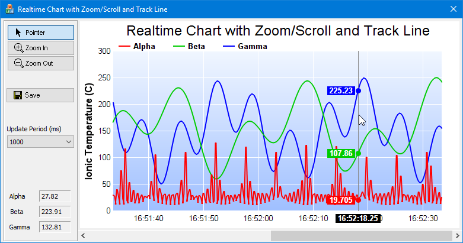

This example demonstrates a zoomable and scrollable real-time chart with configurable chart update rate. The chart is zoomable and scrollable and include a track cursor like that in the
Zooming and Scrolling with Track Line (1) (MFC) example. It can zoom and scroll by clicking and dragging on the chart, by using the mouse wheel, and by using the scroll bar. The track cursor updates the legend dynamically to display the data values as the mouse cursor moves over the chart.
The real-time data in this example are produced by a random number generator driven with a timer. The values are appended to data arrays which are used for creating the chart. If the arrays are full, the earliest 5% of the data will be removed from them to leave space for new data. The display is updated by a second timer. This allows the display update rate to be configurable independent of the data rate.
As this chart is zoomable and scrollable, when new data arrives, in addition to updating the chart, the viewport and the scrollbar would need to update to reflect the updated data range. In this example, two alternative update methods are used depending on what is currently displayed:
- If the chart is displaying the latest data, when new data come in, the viewport will be updated to continue displaying the latest data. In other words, the chart will scroll when new data arrives. This is by updating the viewport using ViewPortManager.updateFullRangeH with ScrollWithMax.
- If the chart has been scrolled back to display older data, when new data come in, the viewport will be updated so that the chart will remain unchanged. This is to allow the user to view older data without the chart constantly moving. This is achieved by updating the viewport using ViewPortManager.updateFullRangeH with KeepVisibleRange.
The track cursor drawing code is essentially the same as that in
Track Line with Legend (MFC). Please refer to that example for the explanation of the code.
[MFC version] mfcdemo/RealTimeZoomScrollDlg.cpp
//
// Real Time Chart with Zoom/Scroll and Track Line sample code
//
#include "stdafx.h"
#include "resource.h"
#include "RealTimeZoomScrollDlg.h"
#include <math.h>
#include <vector>
#include <sstream>
#include <algorithm>
#ifdef _DEBUG
#define new DEBUG_NEW
#endif
//
// The DataRateTimerId is for the timer that gets real-time data. In real applications,
// the data can be updated by a timer or other methods. In this example, this timer is
// set to 250ms.
//
// The ChartUpdateTimer is for the timer that updates the chart. In this example,
// the user can choose the chart update rate from the user interface.
//
static const int DataRateTimer = 1;
static const int ChartUpdateTimer = 2;
static const int DataInterval = 250;
//
// Constructor
//
CRealTimeZoomScrollDlg::CRealTimeZoomScrollDlg(CWnd* pParent /*=NULL*/)
: CDialog(IDD_REALTIMEZOOMSCROLL, pParent)
{
// Initialize variables
for (int i = 0; i < sampleSize; ++i)
m_timeStamps[i] = m_dataSeriesA[i] = m_dataSeriesB[i] = m_dataSeriesC[i] = Chart::NoValue;
m_nextDataTime = m_currentIndex = 0;
}
//
// Destructor
//
CRealTimeZoomScrollDlg::~CRealTimeZoomScrollDlg()
{
delete m_ChartViewer.getChart();
}
void CRealTimeZoomScrollDlg::DoDataExchange(CDataExchange* pDX)
{
CDialog::DoDataExchange(pDX);
DDX_Control(pDX, IDC_GammaValue, m_ValueC);
DDX_Control(pDX, IDC_BetaValue, m_ValueB);
DDX_Control(pDX, IDC_AlphaValue, m_ValueA);
DDX_Control(pDX, IDC_ChartViewer, m_ChartViewer);
DDX_Control(pDX, IDC_UpdatePeriod, m_UpdatePeriod);
DDX_Control(pDX, IDC_PointerPB, m_PointerPB);
DDX_Control(pDX, IDC_HScrollBar, m_HScrollBar);
}
BEGIN_MESSAGE_MAP(CRealTimeZoomScrollDlg, CDialog)
ON_WM_PAINT()
ON_WM_QUERYDRAGICON()
ON_WM_TIMER()
ON_CBN_SELCHANGE(IDC_UpdatePeriod, OnSelchangeUpdatePeriod)
ON_CONTROL(CVN_ViewPortChanged, IDC_ChartViewer, OnViewPortChanged)
ON_CONTROL(CVN_MouseMovePlotArea, IDC_ChartViewer, OnMouseMovePlotArea)
ON_BN_CLICKED(IDC_PointerPB, OnPointerPB)
ON_BN_CLICKED(IDC_ZoomInPB, OnZoomInPB)
ON_BN_CLICKED(IDC_ZoomOutPB, OnZoomOutPB)
ON_BN_CLICKED(IDC_SavePB, OnSavePB)
ON_WM_HSCROLL()
END_MESSAGE_MAP()
//
// Initialization
//
BOOL CRealTimeZoomScrollDlg::OnInitDialog()
{
CDialog::OnInitDialog();
// Set m_nextDataTime to the current time. It is used by the real time random number
// generator so it knows what timestamp should be used for the next data point.
SYSTEMTIME st;
GetLocalTime(&st);
m_nextDataTime = Chart::chartTime(st.wYear, st.wMonth, st.wDay, st.wHour, st.wMinute,
st.wSecond);
// Load icons for the buttons
loadButtonIcon(IDC_PointerPB, IDI_PointerPB, 100, 20);
loadButtonIcon(IDC_ZoomInPB, IDI_ZoomInPB, 100, 20);
loadButtonIcon(IDC_ZoomOutPB, IDI_ZoomOutPB, 100, 20);
loadButtonIcon(IDC_SavePB, IDI_SavePB, 100, 20);
// Initially set the mouse to drag to scroll mode.
m_PointerPB.SetCheck(1);
m_ChartViewer.setMouseUsage(Chart::MouseUsageScroll);
// Enable mouse wheel zooming by setting the zoom ratio to 1.1 per wheel event
m_ChartViewer.setMouseWheelZoomRatio(1.1);
// Set up the data acquisition mechanism. In this demo, we just use a timer to get a
// sample every 250ms.
SetTimer(DataRateTimer, DataInterval, 0);
// The chart update rate initially set to 1000ms
m_UpdatePeriod.SelectString(0, _T("250"));
OnSelchangeUpdatePeriod();
return TRUE;
}
//
// User clicks on the Pointer pushbutton
//
void CRealTimeZoomScrollDlg::OnPointerPB()
{
m_ChartViewer.setMouseUsage(Chart::MouseUsageScroll);
}
//
// User clicks on the Zoom In pushbutton
//
void CRealTimeZoomScrollDlg::OnZoomInPB()
{
m_ChartViewer.setMouseUsage(Chart::MouseUsageZoomIn);
}
//
// User clicks on the Zoom Out pushbutton
//
void CRealTimeZoomScrollDlg::OnZoomOutPB()
{
m_ChartViewer.setMouseUsage(Chart::MouseUsageZoomOut);
}
//
// User clicks on the Save pushbutton
//
void CRealTimeZoomScrollDlg::OnSavePB()
{
// Supported formats = PNG, JPG, GIF, BMP, SVG and PDF
TCHAR szFilters[]= _T("PNG (*.png)|*.png|JPG (*.jpg)|*.jpg|GIF (*.gif)|*.gif|")
_T("BMP (*.bmp)|*.bmp|SVG (*.svg)|*.svg|PDF (*.pdf)|*.pdf||");
// The standard CFileDialog
CFileDialog fileDlg(FALSE, _T("png"), _T("chartdirector_demo"), OFN_HIDEREADONLY |
OFN_OVERWRITEPROMPT, szFilters);
if(fileDlg.DoModal() != IDOK)
return;
// Save the chart
CString path = fileDlg.GetPathName();
BaseChart *c = m_ChartViewer.getChart();
if (0 != c)
c->makeChart(TCHARtoUTF8(path));
}
//
// User clicks on the the horizontal scroll bar
//
void CRealTimeZoomScrollDlg::OnHScroll(UINT nSBCode, UINT nPos, CScrollBar* pScrollBar)
{
// Update the view port if the scroll bar has moved
double newViewPortLeft = moveScrollBar(nSBCode, nPos, pScrollBar);
if (newViewPortLeft != m_ChartViewer.getViewPortLeft())
{
m_ChartViewer.setViewPortLeft(newViewPortLeft);
m_ChartViewer.updateViewPort(true, false);
}
CDialog::OnHScroll(nSBCode, nPos, pScrollBar);
}
//
// User changes the chart update period
//
void CRealTimeZoomScrollDlg::OnSelchangeUpdatePeriod()
{
CString s;
m_UpdatePeriod.GetLBText(m_UpdatePeriod.GetCurSel(), s);
SetTimer(ChartUpdateTimer, _tcstol(s, 0, 0), 0);
}
//
// Handles timer events
//
void CRealTimeZoomScrollDlg::OnTimer(UINT_PTR nIDEvent)
{
switch (nIDEvent)
{
case DataRateTimer:
// Is data acquisition timer
OnDataRateTimer();
break;
case ChartUpdateTimer:
// Is chart update timer
OnChartUpdateTimer();
break;
}
CDialog::OnTimer(nIDEvent);
}
//
// View port changed event
//
void CRealTimeZoomScrollDlg::OnViewPortChanged()
{
// In addition to updating the chart, we may also need to update other controls that
// changes based on the view port.
updateControls(&m_ChartViewer);
// Update the chart if necessary
if (m_ChartViewer.needUpdateChart())
drawChart(&m_ChartViewer);
}
//
// Draw track cursor when mouse is moving over plotarea
//
void CRealTimeZoomScrollDlg::OnMouseMovePlotArea()
{
trackLineLabel((XYChart *)m_ChartViewer.getChart(), m_ChartViewer.getPlotAreaMouseX());
m_ChartViewer.updateDisplay();
}
//
// The data acquisition routine. In this demo, this is invoked every 250ms.
//
void CRealTimeZoomScrollDlg::OnDataRateTimer()
{
// The current time in millisecond resolution
SYSTEMTIME st;
GetLocalTime(&st);
double now = Chart::chartTime(st.wYear, st.wMonth, st.wDay, st.wHour, st.wMinute, st.wSecond)
+ st.wMilliseconds / 1000.0;
//
// Use a loop to generate random numbers since the last time this method is called.
//
do
{
// In this example, we use some formulas to generate new values.
double p = m_nextDataTime * 4;
double dataA = 20 + cos(p * 2.2) * 10 + 1 / (cos(p) * cos(p) + 0.01);
double dataB = 150 + 100 * sin(p / 27.7) * sin(p / 10.1);
double dataC = 150 + 100 * cos(p / 6.7) * cos(p / 11.9);
// If the data arrays are full, we remove the oldest 5% of data.
if (m_currentIndex >= sampleSize)
{
m_currentIndex = sampleSize * 95 / 100 - 1;
for(int i = 0; i < m_currentIndex; ++i)
{
int srcIndex = i + sampleSize - m_currentIndex;
m_timeStamps[i] = m_timeStamps[srcIndex];
m_dataSeriesA[i] = m_dataSeriesA[srcIndex];
m_dataSeriesB[i] = m_dataSeriesB[srcIndex];
m_dataSeriesC[i] = m_dataSeriesC[srcIndex];
}
}
// Store the new values in the current index position, and increment the index.
m_timeStamps[m_currentIndex] = m_nextDataTime;
m_dataSeriesA[m_currentIndex] = dataA;
m_dataSeriesB[m_currentIndex] = dataB;
m_dataSeriesC[m_currentIndex] = dataC;
++m_currentIndex;
m_nextDataTime += DataInterval / 1000.0;
}
while (m_nextDataTime < now);
//
// We provide some visual feedback to the latest numbers generated, so you can see the
// data being generated.
//
char buffer[1024];
sprintf_s(buffer, sizeof(buffer), " %.2f", m_dataSeriesA[m_currentIndex - 1]);
m_ValueA.SetWindowText(CString(buffer));
sprintf_s(buffer, sizeof(buffer), " %.2f", m_dataSeriesB[m_currentIndex - 1]);
m_ValueB.SetWindowText(CString(buffer));
sprintf_s(buffer, sizeof(buffer), " %.2f", m_dataSeriesC[m_currentIndex - 1]);
m_ValueC.SetWindowText(CString(buffer));
}
//
// Update the chart and the viewport periodically
//
void CRealTimeZoomScrollDlg::OnChartUpdateTimer()
{
if (m_currentIndex > 0)
{
//
// As we added more data, we may need to update the full range of the viewport.
//
double startDate = m_timeStamps[0];
double endDate = m_timeStamps[m_currentIndex - 1];
// Use the initialFullRange (which is 60 seconds in this demo) if this is sufficient.
double duration = endDate - startDate;
if (duration < initialFullRange)
endDate = startDate + initialFullRange;
// Update the full range to reflect the actual duration of the data. In this case,
// if the view port is viewing the latest data, we will scroll the view port as new
// data are added. If the view port is viewing historical data, we would keep the
// axis scale unchanged to keep the chart stable.
int updateType = Chart::ScrollWithMax;
if (m_ChartViewer.getViewPortLeft() + m_ChartViewer.getViewPortWidth() < 0.999)
updateType = Chart::KeepVisibleRange;
bool scaleHasChanged = m_ChartViewer.updateFullRangeH("x", startDate, endDate, updateType);
// Set the zoom in limit as a ratio to the full range
m_ChartViewer.setZoomInWidthLimit(zoomInLimit / (m_ChartViewer.getValueAtViewPort("x", 1) -
m_ChartViewer.getValueAtViewPort("x", 0)));
// Trigger the viewPortChanged event to update the display if the axis scale has changed
// or if new data are added to the existing axis scale.
if (scaleHasChanged || (duration < initialFullRange))
m_ChartViewer.updateViewPort(true, false);
}
}
//
// Handle scroll bar events
//
double CRealTimeZoomScrollDlg::moveScrollBar(UINT nSBCode, UINT nPos, CScrollBar* pScrollBar)
{
//
// Get current scroll bar position
//
SCROLLINFO info;
info.cbSize = sizeof(SCROLLINFO);
info.fMask = SIF_ALL;
pScrollBar->GetScrollInfo(&info);
//
// Compute new position based on the type of scroll bar events
//
int newPos = info.nPos;
switch (nSBCode)
{
case SB_LEFT:
newPos = info.nMin;
break;
case SB_RIGHT:
newPos = info.nMax;
break;
case SB_LINELEFT:
newPos -= (info.nPage > 10) ? info.nPage / 10 : 1;
break;
case SB_LINERIGHT:
newPos += (info.nPage > 10) ? info.nPage / 10 : 1;
break;
case SB_PAGELEFT:
newPos -= info.nPage;
break;
case SB_PAGERIGHT:
newPos += info.nPage;
break;
case SB_THUMBTRACK:
newPos = info.nTrackPos;
break;
}
if (newPos < info.nMin) newPos = info.nMin;
if (newPos > info.nMax) newPos = info.nMax;
// Update the scroll bar with the new position
pScrollBar->SetScrollPos(newPos);
// Returns the position of the scroll bar as a ratio of its total length
return ((double)(newPos - info.nMin)) / (info.nMax - info.nMin);
}
//
// Update controls when the view port changed
//
void CRealTimeZoomScrollDlg::updateControls(CChartViewer *viewer)
{
// Update the scroll bar to reflect the view port position and width of the view port.
m_HScrollBar.EnableWindow(viewer->getViewPortWidth() < 1);
if (viewer->getViewPortWidth() < 1)
{
SCROLLINFO info;
info.cbSize = sizeof(SCROLLINFO);
info.fMask = SIF_ALL;
info.nMin = 0;
info.nMax = 0x1fffffff;
info.nPage = (int)ceil(viewer->getViewPortWidth() * (info.nMax - info.nMin));
info.nPos = (int)(0.5 + viewer->getViewPortLeft() * (info.nMax - info.nMin)) + info.nMin;
m_HScrollBar.SetScrollInfo(&info);
}
}
//
// Draw the chart and display it in the given viewer
//
void CRealTimeZoomScrollDlg::drawChart(CChartViewer *viewer)
{
// Get the start date and end date that are visible on the chart.
double viewPortStartDate = viewer->getValueAtViewPort("x", viewer->getViewPortLeft());
double viewPortEndDate = viewer->getValueAtViewPort("x", viewer->getViewPortRight());
// Extract the part of the data arrays that are visible.
DoubleArray viewPortTimeStamps;
DoubleArray viewPortDataSeriesA;
DoubleArray viewPortDataSeriesB;
DoubleArray viewPortDataSeriesC;
if (m_currentIndex > 0)
{
// Get the array indexes that corresponds to the visible start and end dates
int startIndex = (int)floor(Chart::bSearch(DoubleArray(m_timeStamps, m_currentIndex), viewPortStartDate));
int endIndex = (int)ceil(Chart::bSearch(DoubleArray(m_timeStamps, m_currentIndex), viewPortEndDate));
int noOfPoints = endIndex - startIndex + 1;
// Extract the visible data
viewPortTimeStamps = DoubleArray(m_timeStamps+ startIndex, noOfPoints);
viewPortDataSeriesA = DoubleArray(m_dataSeriesA + startIndex, noOfPoints);
viewPortDataSeriesB = DoubleArray(m_dataSeriesB + startIndex, noOfPoints);
viewPortDataSeriesC = DoubleArray(m_dataSeriesC + startIndex, noOfPoints);
}
//
// At this stage, we have extracted the visible data. We can use those data to plot the chart.
//
//================================================================================
// Configure overall chart appearance.
//================================================================================
// Create an XYChart object of size 640 x 350 pixels
XYChart *c = new XYChart(640, 350);
// Set the plotarea at (55, 50) with width 80 pixels less than chart width, and height 80 pixels
// less than chart height. Use a vertical gradient from light blue (f0f6ff) to sky blue (a0c0ff)
// as background. Set border to transparent and grid lines to white (ffffff).
c->setPlotArea(55, 50, c->getWidth() - 85, c->getHeight() - 80, c->linearGradientColor(0, 50, 0,
c->getHeight() - 35, 0xf0f6ff, 0xa0c0ff), -1, Chart::Transparent, 0xffffff, 0xffffff);
// As the data can lie outside the plotarea in a zoomed chart, we need enable clipping.
c->setClipping();
// Add a title to the chart using 18pt Arial font
c->addTitle(" Real-Time Chart with Zoom/Scroll and Track Line", "Arial", 18);
// Add a legend box at (55, 25) using horizontal layout. Use 10pt Arial Bold as font. Set the
// background and border color to transparent and use line style legend key.
LegendBox *b = c->addLegend(55, 25, false, "Arial Bold", 10);
b->setBackground(Chart::Transparent);
b->setLineStyleKey();
// Set the x and y axis stems to transparent and the label font to 10pt Arial
c->xAxis()->setColors(Chart::Transparent);
c->yAxis()->setColors(Chart::Transparent);
c->xAxis()->setLabelStyle("Arial", 10);
c->yAxis()->setLabelStyle("Arial", 10);
// Set the y-axis tick length to 0 to disable the tick and put the labels closer to the axis.
c->yAxis()->setTickLength(0);
// Add axis title using 12pt Arial Bold Italic font
c->yAxis()->setTitle("Ionic Temperature (C)", "Arial Bold", 12);
//================================================================================
// Add data to chart
//================================================================================
//
// In this example, we represent the data by lines. You may modify the code below to use other
// representations (areas, scatter plot, etc).
//
// Add a line layer for the lines, using a line width of 2 pixels
LineLayer *layer = c->addLineLayer();
layer->setLineWidth(2);
layer->setFastLineMode();
// Now we add the 3 data series to a line layer, using the color red (ff0000), green (00cc00)
// and blue (0000ff)
layer->setXData(viewPortTimeStamps);
layer->addDataSet(viewPortDataSeriesA, 0xff0000, "Alpha");
layer->addDataSet(viewPortDataSeriesB, 0x00cc00, "Beta");
layer->addDataSet(viewPortDataSeriesC, 0x0000ff, "Gamma");
//================================================================================
// Configure axis scale and labelling
//================================================================================
// Set the x-axis as a date/time axis with the scale according to the view port x range.
if (m_currentIndex > 0)
c->xAxis()->setDateScale(viewPortStartDate, viewPortEndDate);
// For the automatic axis labels, set the minimum spacing to 75/30 pixels for the x/y axis.
c->xAxis()->setTickDensity(75);
c->yAxis()->setTickDensity(30);
//
// In this example, the axis range can change from a few seconds to thousands of seconds.
// We can need to define the axis label format for the various cases.
//
// If all ticks are minute algined, then we use "hh:nn" as the label format.
c->xAxis()->setFormatCondition("align", 60);
c->xAxis()->setLabelFormat("{value|hh:nn}");
// If all other cases, we use "hh:nn:ss" as the label format.
c->xAxis()->setFormatCondition("else");
c->xAxis()->setLabelFormat("{value|hh:nn:ss}");
// We make sure the tick increment must be at least 1 second.
c->xAxis()->setMinTickInc(1);
//================================================================================
// Output the chart
//================================================================================
// We need to update the track line too. If the mouse is moving on the chart, the track line
// will be updated in MouseMovePlotArea. Otherwise, we need to update the track line here.
if (!viewer->isInMouseMoveEvent())
trackLineLabel(c, (0 == viewer->getChart()) ? c->getWidth() : viewer->getPlotAreaMouseX());
// Set the chart image to the WinChartViewer
delete viewer->getChart();
viewer->setChart(c);
}
//
// Draw track line with data labels
//
void CRealTimeZoomScrollDlg::trackLineLabel(XYChart *c, int mouseX)
{
// Obtain the dynamic layer of the chart
DrawArea *d = c->initDynamicLayer();
// The plot area object
PlotArea *plotArea = c->getPlotArea();
// Get the data x-value that is nearest to the mouse, and find its pixel coordinate.
double xValue = c->getNearestXValue(mouseX);
int xCoor = c->getXCoor(xValue);
if (xCoor < plotArea->getLeftX())
return;
// Draw a vertical track line at the x-position
d->vline(plotArea->getTopY(), plotArea->getBottomY(), xCoor, 0x888888);
// Draw a label on the x-axis to show the track line position.
std::ostringstream xlabel;
xlabel << "<*font,bgColor=000000*> " << c->xAxis()->getFormattedLabel(xValue, "hh:nn:ss.ff")
<< " <*/font*>";
TTFText *t = d->text(xlabel.str().c_str(), "Arial Bold", 10);
// Restrict the x-pixel position of the label to make sure it stays inside the chart image.
int xLabelPos = (std::max)(0, (std::min)(xCoor - t->getWidth() / 2, c->getWidth() - t->getWidth()));
t->draw(xLabelPos, plotArea->getBottomY() + 6, 0xffffff);
t->destroy();
// Iterate through all layers to draw the data labels
for (int i = 0; i < c->getLayerCount(); ++i) {
Layer *layer = c->getLayerByZ(i);
// The data array index of the x-value
int xIndex = layer->getXIndexOf(xValue);
// Iterate through all the data sets in the layer
for (int j = 0; j < layer->getDataSetCount(); ++j)
{
DataSet *dataSet = layer->getDataSetByZ(j);
const char *dataSetName = dataSet->getDataName();
// Get the color, name and position of the data label
int color = dataSet->getDataColor();
int yCoor = c->getYCoor(dataSet->getPosition(xIndex), dataSet->getUseYAxis());
// Draw a track dot with a label next to it for visible data points in the plot area
if ((yCoor >= plotArea->getTopY()) && (yCoor <= plotArea->getBottomY()) && (color !=
Chart::Transparent) && dataSetName && *dataSetName)
{
d->circle(xCoor, yCoor, 4, 4, color, color);
std::ostringstream label;
label << "<*font,bgColor=" << std::hex << color << "*> "
<< c->formatValue(dataSet->getValue(xIndex), "{value|P4}") << " <*font*>";
t = d->text(label.str().c_str(), "Arial Bold", 10);
// Draw the label on the right side of the dot if the mouse is on the left side the
// chart, and vice versa. This ensures the label will not go outside the chart image.
if (xCoor <= (plotArea->getLeftX() + plotArea->getRightX()) / 2)
t->draw(xCoor + 6, yCoor, 0xffffff, Chart::Left);
else
t->draw(xCoor - 6, yCoor, 0xffffff, Chart::Right);
t->destroy();
}
}
}
}
/////////////////////////////////////////////////////////////////////////////
// General utilities
//
// Load an icon resource into a button
//
void CRealTimeZoomScrollDlg::loadButtonIcon(int buttonId, int iconId, int width, int height)
{
// Resize the icon to match the screen DPI for high DPI support
HDC screen = ::GetDC(0);
double scaleFactor = GetDeviceCaps(screen, LOGPIXELSX) / 96.0;
::ReleaseDC(0, screen);
width = (int)(width * scaleFactor + 0.5);
height = (int)(height * scaleFactor + 0.5);
GetDlgItem(buttonId)->SendMessage(BM_SETIMAGE, IMAGE_ICON, (LPARAM)::LoadImage(
AfxGetResourceHandle(), MAKEINTRESOURCE(iconId), IMAGE_ICON, width, height, LR_DEFAULTCOLOR));
}
© 2023 Advanced Software Engineering Limited. All rights reserved.